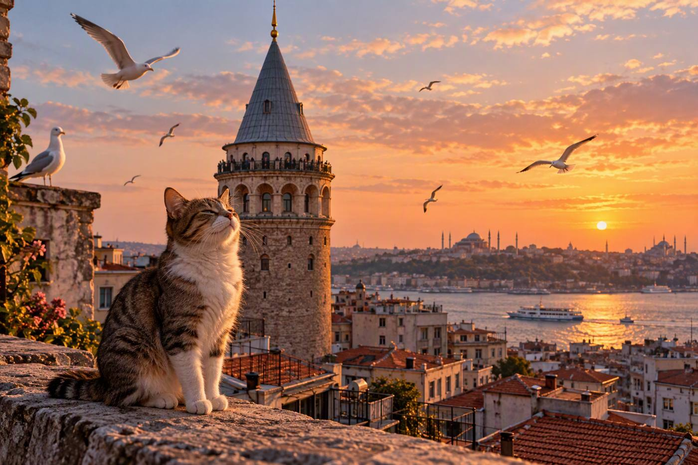

BEYOĞLU · 1348
Galata Kulesi
Cenevizliler 1348'de Galata surlarının en yüksek noktasına inşa etti. Yaklaşık 67 metrelik taş gövdesi yüzyıllarca yangın gözetleme kulesi olarak da kullanıldı. Bugün tepesindeki seyir terasından Haliç, Tarihî Yarımada ve Boğaz bir arada görünür.